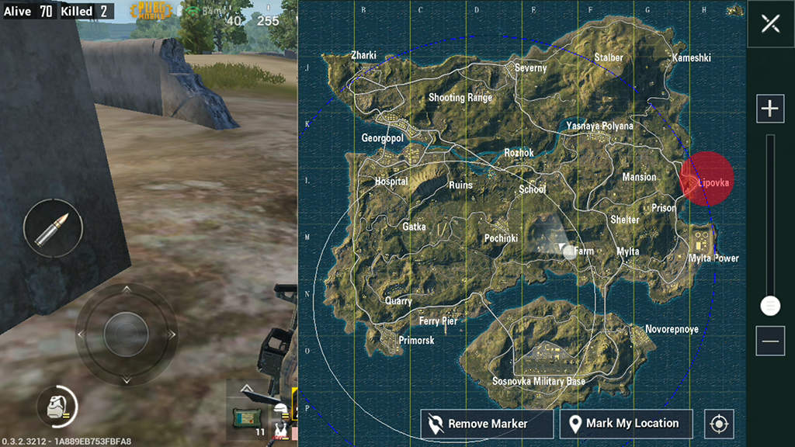
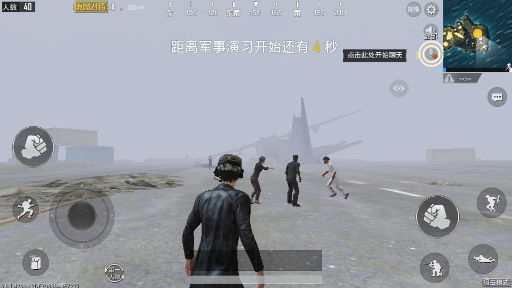
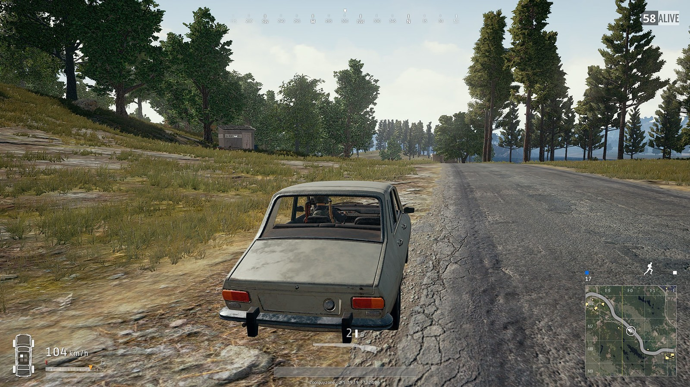
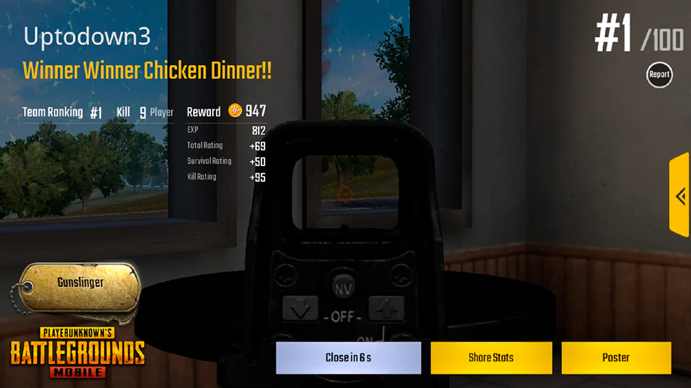

Introduction and Basic Rule
The general rule of this game is there will be 100 players in each game. At the beginning of the game, the players will be taken to an island by helicopter. The players can choose the place of parachuting freely. And all equipment (guns, ammunition, armor, medical kits, etc.) needs to be found by the players themselves in the building.
Pic 01: This is what a parachuing will be looklike.
The game unfolds in such a way that players distribute bare-handed in all corners of the island. They will use the weapons and props found in the buildings on the island to kill the enemy or hide.Players must arrive at a safe area on the map at a specified time. If they spend too long outside the safe area, they will be out because of the decrease in their life. Over time, there are fewer and fewer safe zones on the island, explosions can occur in specific areas, and players will be phased out because of fighting, and only one person will survive and win in the end.
 Pic 02: The white circle is the future safezone. The blue circle is the current safezone.
Generally, there are three kinds of weather scenes in the game: sunny, foggy and rainy. In the latest update, snow and night scenes have been added to the game. Be aware that visibility decreases in foggy days and nights, so the game is slightly more difficult.
 Pic 03: Foggy weather in PUBG Mobile.
There are SUVs, karts, sedans, and pickups in the game. Usually, we can see these vehicles by the roadside. We can also see boats by the river. If the safety zone is far away from us or we are being attacked, using vehicles is the best way to quickly move places or escape.
 Pic 04: We can often find cars beside roads.
The simple rule is, when the plane takes off, choose the place to land, search for guns and accessories, keep running into the safety zone, try to survive, and be the last person so you can win and "eat chicken"!
 Pic 05: Winner Winner Chicken Dinner!